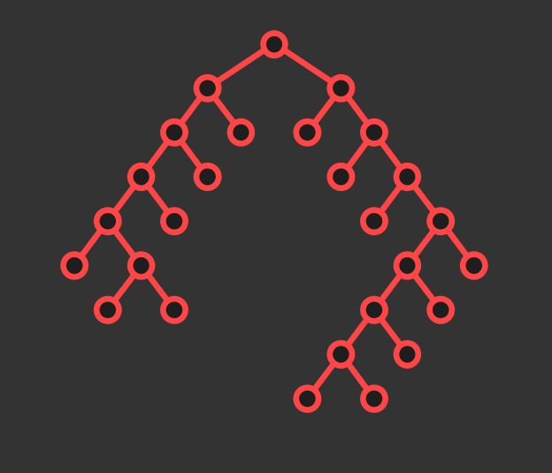

| Trees | Graph |
|---|---|
| Trees are graphs with hierarchical structure | In the Graph, model relations among data |
| Trees can have hierarchies such was organizational charts, cotegorical classifications et al. | |
| Trees can have branching processes | |
| Trees can have decision processes | |
| Trees maintain the relative ordering of left and right subtree | |
|  | |
| In the trees, nodes at the same levels should be aligned | |
| In the trees, parent should be centered over the children |